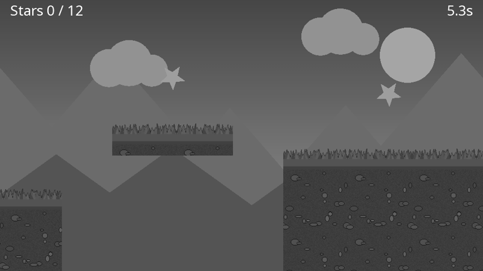
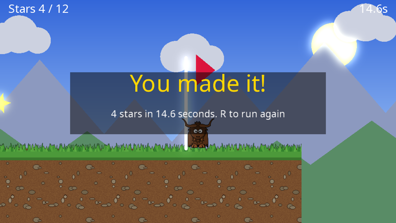

Yak Run, part 4: effects and polish
The game from part 3 is complete, but plain. In this final part the whole scene goes through a chain of GPU effects on its way to the screen: the stars and sun glow, collecting a star sends out a ripple, and falling off the level fades the world to grey. The HUD stays crisp on top of it all.


You will learn: render targets, building a post-processing pipeline, bloom, distortion and the distortion helpers, colour effects with smooth transitions, and resizable windows.
The finished code for this part: code/YakRun/Part4. Only Game.cs changes.
The idea: render into surfaces, not the window
So far every draw stage has been rendered straight onto the window. But a render stage can render onto any render target: an off-screen image on the GPU. And a render target can then be the input to another stage. By rendering the scene into a render target, then passing it through effect stages, each reading one surface and writing the next, we can transform the whole picture:
flowchart LR
BG[(background)] --> W1[/world target/]
LV[(level)] --> W1
W1 -- "Distortion<br/>(ripples)" --> W2[/distorted target/]
W2 -- "ColourEffects<br/>(grey fade)" --> W3[/coloured target/]
W3 -- "Bloom<br/>(glow)" --> WIN[/window/]
HUD[(HUD)] --> WIN
See Surfaces and render targets and The render queue and render stages.
New fields
// Game state (plain C# objects, these survive a graphics device reset)
private Level _level;
private Yak _yak;
private Background _background;
private Vector2 _lastSafePosition;
private Vector2 _cameraFocus;
private int _starsCollected;
private bool _finished;
private float _time;
private float _respawnTimer;
// yak2D resources (created in CreateResources)
private ITexture _yakTexture;
private ITexture _grassTexture;
private ITexture _soilTexture;
private ITexture _rippleTexture;
private IDrawStage _backgroundStage;
private IDrawStage _levelStage;
private IDrawStage _hudStage;
private ICamera2D _camera;
private ICamera2D _backgroundCamera;
private ICamera2D _hudCamera;
private IRenderTarget _worldTarget;
private IRenderTarget _distortedTarget;
private IRenderTarget _colouredTarget;
private IDistortionStage _distortionStage;
private IDistortionCollection _ripples;
private IColourEffectsStage _colourStage;
private IBloomStage _bloomStage;
Three render targets, three effect stages, a texture for the ripples and a helper to manage them, plus a timer for respawning.
Creating the effects
CreateResources() now ends with a call to CreateEffects():
private void CreateEffects(IServices yak)
{
// Off-screen surfaces for the post-processing chain. They clear themselves each frame
_worldTarget = yak.Surfaces.CreateRenderTarget(960, 540);
_distortedTarget = yak.Surfaces.CreateRenderTarget(960, 540);
_colouredTarget = yak.Surfaces.CreateRenderTarget(960, 540);
// Ripples: a distortion stage, a ring shaped height map texture, and a helper collection
// that grows and fades each ripple over time
_distortionStage = yak.Stages.CreateDistortionStage(480, 270, true);
yak.Stages.SetDistortionConfig(_distortionStage, new DistortionEffectConfiguration { DistortionScalar = 30.0f });
_rippleTexture = yak.Helpers.DistortionHelper.TextureGenerator.ConcentricSinusoidalFloat32(128, 128, 6, true, true);
_ripples = yak.Helpers.DistortionHelper.CreateNewCollection();
// Colour effects start as "no change", and are used to fade the world to grey when the yak falls
_colourStage = yak.Stages.CreateColourEffectsStage();
yak.Stages.SetColourEffectsConfig(_colourStage, NormalColours);
// Bloom makes the brightest pixels (the stars and the sun) glow
_bloomStage = yak.Stages.CreateBloomStage(240, 135);
yak.Stages.SetBloomConfig(_bloomStage, new BloomEffectConfiguration
{
BrightnessThreshold = 0.86f, // luminance (0 to 1): the stars and sun are brighter than this, the clouds are not
AdditiveMixAmount = 0.9f,
NumberOfBlurSamples = 8,
ReSamplerType = ResizeSamplerType.Average4x4
});
}
private static readonly ColourEffectConfiguration NormalColours = new ColourEffectConfiguration { Opacity = 1.0f };
private static readonly ColourEffectConfiguration FallenColours = new ColourEffectConfiguration
{
GrayScale = 1.0f,
SingleColour = 0.3f,
ColourForSingleColourAndColourise = Colour.Black,
Opacity = 1.0f
};
Render targets. Each is 960 x 540, the same as the cameras' virtual resolution. By default a render target clears itself at the start of every frame.
Distortion. A distortion stage bends its input image according to a height map that we draw into it each frame, a bit like looking through rippling water. ConcentricSinusoidalFloat32 generates a height map texture of rings, and a distortion collection animates copies of it: each one grows, moves and fades over its lifetime. See Distortion.
Colour effects. A colour effects stage can grey, tint, fade or invert its input. We keep two configurations: NormalColours (no change: note Opacity must be 1) and FallenColours (fully grey, and darkened by blending 30% towards black). See Colour effects.
Bloom. Bloom makes bright areas glow. Only pixels brighter than the threshold take part, using luminance (how bright a colour looks to us). The stars' pale yellow and the sun are brighter than 0.86; the slightly grey clouds are not, so they do not glow. See Bloom.
Triggering the effects
The update code gains two effect triggers:
public bool Update(IServices yak, float secondsSinceLastUpdate)
{
var input = yak.Input;
if (input.WasKeyPressedThisFrame(KeyCode.Escape))
{
return false; // returning false shuts the application down
}
if (input.WasKeyPressedThisFrame(KeyCode.R))
{
Restart();
}
if (_respawnTimer > 0.0f)
{
UpdateRespawn(yak, secondsSinceLastUpdate);
return true;
}
var (move, jump) = ReadControls(input);
if (_finished)
{
move = 0.0f;
jump = false;
}
else
{
_time += secondsSinceLastUpdate;
}
_yak.Update(secondsSinceLastUpdate, move, jump, _level.Platforms);
if (_yak.OnGround)
{
_lastSafePosition = _yak.Position;
}
CollectStars();
if (!_finished && _yak.Position.X >= _level.Flag.X)
{
_finished = true;
}
if (_yak.Position.Y < Level.FallLimit)
{
// Fade to grey over a quarter of a second, respawn shortly after
yak.Stages.SetColourEffectsConfig(_colourStage, FallenColours, 0.25f);
_respawnTimer = 0.6f;
}
return true;
}
private static (float move, bool jump) ReadControls(IInput input)
{
var move = 0.0f;
if (input.IsKeyCurrentlyPressed(KeyCode.Left) || input.IsKeyCurrentlyPressed(KeyCode.A)) move -= 1.0f;
if (input.IsKeyCurrentlyPressed(KeyCode.Right) || input.IsKeyCurrentlyPressed(KeyCode.D)) move += 1.0f;
var jump = input.WasKeyPressedThisFrame(KeyCode.Space) ||
input.WasKeyPressedThisFrame(KeyCode.Up) ||
input.WasKeyPressedThisFrame(KeyCode.W);
// Any connected gamepad works too: left stick to run, A to jump
foreach (var id in input.ConnectedGamepadIds())
{
var stick = input.GamepadAxisValue(id, GamepadAxis.LeftX);
if (MathF.Abs(stick) > 0.25f)
{
move = stick;
}
jump |= input.WasGamepadButtonPressedThisFrame(id, GamepadButton.A);
}
return (Math.Clamp(move, -1.0f, 1.0f), jump);
}
private void CollectStars()
{
foreach (var star in _level.Stars.Where(s => !s.Collected))
{
if (Vector2.Distance(star.Position, _yak.Position) < 50.0f)
{
star.Collected = true;
_starsCollected++;
// A ripple that grows from nothing to 400 units wide and fades out over 0.8 seconds
_ripples.Add(LifeCycle.Single, CoordinateSpace.World, 0.8f, _rippleTexture,
star.Position, star.Position,
Vector2.Zero, new Vector2(400.0f),
1.0f, 0.0f,
0.0f, 0.0f);
}
}
}
private void UpdateRespawn(IServices yak, float seconds)
{
_respawnTimer -= seconds;
if (_respawnTimer <= 0.0f)
{
_yak = new Yak(_lastSafePosition);
yak.Stages.SetColourEffectsConfig(_colourStage, NormalColours, 0.5f);
}
}
Collecting a star adds a ripple to the collection, at the star's position in world space: it grows from nothing to 400 units wide while its intensity fades from 1 to 0, over 0.8 seconds, and is then removed automatically.
Falling switches the colour stage to FallenColours with a transition of 0.25 seconds: rather than changing instantly, the stage blends smoothly from its current settings to the new ones. After 0.6 seconds the yak reappears and the colours blend back over half a second. There is no animation code of our own at all. See Smooth transitions.
The ripples are advanced in PreDrawing(), and submitted to the distortion stage in Drawing():
public void PreDrawing(IServices yak, float secondsSinceLastDraw, float secondsSinceLastUpdate)
{
// Ease the camera towards the yak, looking a little ahead in the direction of travel
var target = _yak.Position + new Vector2(0.15f * _yak.Velocity.X, 60.0f);
target.Y = Math.Clamp(target.Y, -80.0f, 200.0f);
_cameraFocus = Vector2.Lerp(_cameraFocus, target, 1.0f - MathF.Exp(-6.0f * secondsSinceLastDraw));
yak.Cameras.SetCamera2DFocusAndZoom(_camera, _cameraFocus, 1.0f);
yak.Cameras.SetCamera2DFocusAndZoom(_backgroundCamera, _cameraFocus * Background.ParallaxFactor, 1.0f);
_ripples.Update(secondsSinceLastDraw);
}
public void Drawing(IDrawing draw, IFps fps, IInput input, ICoordinateTransforms transforms, float secondsSinceLastDraw, float secondsSinceLastUpdate)
{
_background.Draw(draw, _backgroundStage);
_level.Draw(draw, _levelStage, _grassTexture, _soilTexture, _time);
_yak.Draw(draw, _levelStage, _yakTexture);
_ripples.Draw(draw, _distortionStage);
DrawHud(draw);
}
private void DrawHud(IDrawing draw)
{
// HUD text is in Screen space: (0,0) is the middle of the screen, +Y is up, and the
// virtual screen is 960 x 540. A string's position is the top of the text
var stars = $"Stars {_starsCollected} / {_level.Stars.Count}";
draw.DrawString(_hudStage, CoordinateSpace.Screen, stars, Colour.White, 28.0f,
new Vector2(-460.0f, 255.0f), TextJustify.Left, 0.5f, 0);
draw.DrawString(_hudStage, CoordinateSpace.Screen, $"{_time:0.0}s", Colour.White, 28.0f,
new Vector2(460.0f, 255.0f), TextJustify.Right, 0.5f, 0);
if (_time < 4.0f && !_finished)
{
draw.DrawString(_hudStage, CoordinateSpace.Screen, "Arrows / A D to run, Space to jump", Colour.White, 22.0f,
new Vector2(0.0f, 150.0f), TextJustify.Centre, 0.5f, 0);
}
if (_finished)
{
draw.Helpers.DrawColouredQuad(_hudStage, CoordinateSpace.Screen, new Colour(0.0f, 0.0f, 0.0f, 0.5f),
new Vector2(0.0f, 20.0f), 620.0f, 150.0f, 0.6f);
draw.DrawString(_hudStage, CoordinateSpace.Screen, "You made it!", Colour.Gold, 56.0f,
new Vector2(0.0f, 80.0f), TextJustify.Centre, 0.5f, 0);
draw.DrawString(_hudStage, CoordinateSpace.Screen, $"{_starsCollected} stars in {_time:0.0} seconds. R to run again",
Colour.White, 24.0f, new Vector2(0.0f, 0.0f), TextJustify.Centre, 0.5f, 0);
}
}
The pipeline
public void Rendering(IRenderQueue q, IRenderTarget windowRenderTarget)
{
// 1. Draw the scene into an off-screen render target: the background, then the level on top
q.Draw(_backgroundStage, _backgroundCamera, _worldTarget);
q.ClearDepth(_worldTarget);
q.Draw(_levelStage, _camera, _worldTarget);
// 2. Post-processing: each stage reads one surface and writes the next
q.Distortion(_distortionStage, _camera, _worldTarget, _distortedTarget);
q.ColourEffects(_colourStage, _distortedTarget, _colouredTarget);
q.Bloom(_bloomStage, _colouredTarget, windowRenderTarget);
// 3. The HUD is drawn straight onto the window, on top of (and unaffected by) the effects
q.ClearDepth(windowRenderTarget);
q.Draw(_hudStage, _hudCamera, windowRenderTarget);
}
Read it from top to bottom:
- The background and level stages are rendered into
_worldTarget(with a depth clear between, as before). - Distortion reads
_worldTargetand writes the rippled version to_distortedTarget. It takes the main camera too, so ripples drawn in world space line up with the stars. - Colour effects read that and write
_colouredTarget. - Bloom reads that and writes to the window.
- The HUD is drawn on the window last, after a depth clear, so it is unaffected by every effect: it stays white when the world goes grey.
Each step reads one surface and writes a different one. A stage should never read and write the same surface in one step.
A resizable window
public StartupConfig Configure()
{
var config = StartupConfig.Default(960, 540, "Yak Run", false);
config.WindowIsResizable = true; // everything is drawn at a virtual resolution, so any window size works
return config;
}
public void OnStartup()
{
_level = new Level();
_background = new Background();
Restart();
}
private void Restart()
{
_level.Reset();
_yak = new Yak(_level.Start);
_lastSafePosition = _level.Start;
_cameraFocus = _level.Start;
_starsCollected = 0;
_finished = false;
_time = 0.0f;
}
Because the whole scene is rendered at a fixed 960 x 540 and the last step (bloom) stretches it onto the window, the game works at any window size without any other changes. Try resizing the window, or making it fullscreen. (If the window's shape changes, the picture stretches to fill it; see Cameras for how to handle that.)
Run it

Where next?
You have used most of yak2D's building blocks. Some ideas for taking Yak Run further, and where to look:
- Enemies and moving platforms: more game objects with their own
Update()andDraw(), likeYak. - A title screen and pause menu: a game state enum, a blurred copy of the game behind the menu (Blur), and text.
- Sprite sheet animation: several frames in one texture, chosen with texture coordinates (Drawing).
- Particles: many small, short-lived shapes on a draw stage with
BlendState.AdditiveAlpha(Blend states). - A retro look: render the world into a small render target with point sampling (Surfaces), or add the CRT style effect (Style effects).
- Your own effect: write a custom shader.
- Share it: distribute your game.